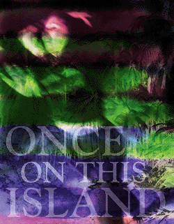

For over eighty years, Ram's Head has entertained the Stanford and Bay Area communities with its innovative student-produced theatre. We are now proud to continue this tradition with an unconventional journey: Ahrens' and Flaherty's Once On This Island, a Caribbean musical fairy-tale, lures us into the world of the mischievious gods Agwe, Erzulie, Asaka, and Papa Ge, the orphan girl Ti Moune and her love for the affluent Daniel.